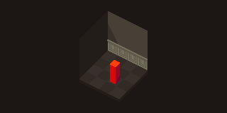
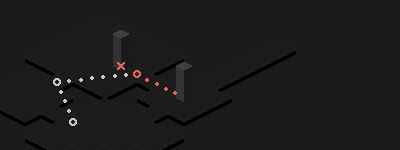
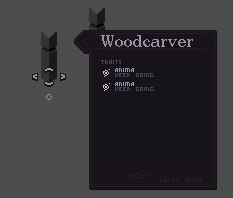
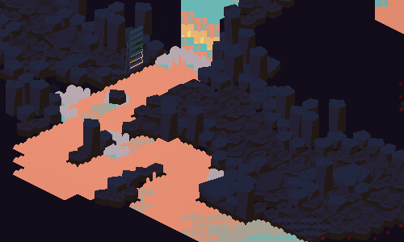

#10
auuughhhhhhhhhh colleege
auuughhhhhhhhhh colleege
i'm pleased to announce bad dream now has a weird grid. tiles are 24x17, skewed, with a good view of both the floor and walls. the skew gives you a better view of actors behind other actors than strict isometric does (which means hovering over them is easier). mostly it looks cool.

godot's built-in tilemap hates this. it lets you render tiles in any other orientation known to man but this one (the problem being that my tiles are skewed, not symmetrical).
after some frustration, i took two days and made my own tilemap node. i've posted it onto the asset library. i can't promise it's as efficient as the built-in tilemap (what with it being written in gdscript and all) but it gets the job done.
the only downside (for me) is that it can't y-sort like the built-in tilemap can. that's fine, i'll just use regular-ass sprites for stuff that needs to be y-sorted. a possible downside is that it might become expensive to edit the tilemap at runtime but i don't think i'll need to do that.
the addon's currently missing some tools (selection & fill), they're on the to-do list. it doesn't account for larger tiles on an atlas, that's also on the to-do list. it's also missing some other features of the built-in tilemap (scene collections, cell transformations, terrains, patterns) but i don't think i'll be implementing those cause i don't need them.
anyhow the asset-making process is going more smoothly now. (the image up there is concept-work, not assets.) i'm having some fun overlaying different tilemaps with different axes.
also: trying out tinylytics kudos here. even though i know a lot of people come through here every day (front page...) this place feels private to me and i like that. hopefully kudos won't disrupt that vibe. also i might have to get rid of them cause i might exceed the hit limit LOL
post-posting note: actually i can solve all these problems with RenderingServer. will be recoding this once i have time again

it's the start of 2025 & i want to make a list of all the big changes i've made since #1 (144 days ago, wow).
it's been a better year four months than i thought. i feel i have a much better idea of what the game can be than i did before. & i'm more organized.
i apologize if the bullets are a little cryptic. i'm planning to write about those systems here in the future.
my main goals with the project right now are (1) finish a start-to-end story draft and (2) finish the battle system and do some playtesting, either with friends or via an itch demo or both. i don't have a strict schedule for either because my next semester will be pretty packed. we'll see what i find time for!
i've been tinkering around with this game for a while. ideally, i would like to actually finish it. as of writing this, it's still in a worse state now than it was five months ago—not to say that the reset hasn't been useful to me (i think i've come out the other end with better architecture) and that there aren't other reasons to explain its slow progress (COLLEGE) but the amount of time i've spent working on this is starting to eat at me a little. i would like to release this game sometime in the next two years and at this rate that's not going to happen.
in conclusion: i need a plan for getting this thing done.
i'm turning the small checklist i had maintained previously into a more organized board using mgmeyers's obsidian kanban plugin (trello makes me seethe. this plugin is nice & simple). i'm dividing it up into a couple of different lanes:
ok it's a week or so later now and i've made good progress with the board! other than the visuals & systems i have removed, the new version is now officially caught up to the old one. but though i've checked things off there's a lot more on the board now... but i'm wasting less time on tasks that aren't important yet! i always go into rabbitholes when i'm coding for fun and this is helping me avoid that cause i can just add it to a list and forget about it for now.
over the past month or so i've been growing a pinterest board (private) and more recently a spotify playlist (public, but you'll have to find it). whenever i'm having trouble making design decisions i like to open the board or put on the playlist and it helps me. consulting the muses
anyway i'm trying to cultivate some productivity. i'm not in a development rush far from it i've got other more important things taking up my time but i like to know i'm making progress on this mammoth.
i'm surprised i'm still making this game. this is usually the point around which i get distracted with something new. good work me.
i haven't been coding much but i've been doing a lot of writing/proofing systems in obsidian. it's made me mull over the traits-as-health idea i mentioned in #2 & i think i might use it after all. one of my goals with this game is to make the combat feel more like a puzzle than a numbers game; this is a step in the right direction, i think. here's the plan.
every actor type will have a unique associated set of traits. an actor's type is now defined by its set of traits—any actor with the set of traits associated with a given actor type automatically becomes an actor of that type. as you strip away traits from more "abstract" enemies, they flip through "baser" forms with different attack patterns.
not only is this system (1) cool and (2) thematically relevant, i can also mix in a lot of strategy. say i make some base enemies more difficult, or give some enemy types attacks that become advantageous in certain contexts—heavy knockback in an arena filled with steep drops, for example. the player might want to avoid these enemies—they'll have to remember the associated trait sets and strip traits in a certain order.
but implementing this won't be feasible unless i either (1) trim down the trait pool as much as possible or (2) engineer battles so that some traits never appear together. i'll probably be doing a mix of both.
there's also the danger that it all becomes too annoying to remember. i could implement a bestiary you could reference during battle but that would make you stare at it for long portions of battle and i don't want that at all. it's ok—you won't ever need to remember every trait set and if i introduce important ones slow enough they won't be too hard to recall.
regarding the concerns i raised in #2—i don't care much about stripping traits as a risk/reward thing, i'll think of something else to make combat interesting. as for the infinite-traits exploit, i can just make the healing system circumnavigate the trait system. perhaps i'll implement healing in the form of a condition that grants "bonus traits" that don't affect trait-typing but are still required to be stripped before an enemy is considered defeated.
our winter break is pretty long so hopefully i'll be able to dedicate some more time to the game. visions of what this game can be have beset me in droves.
deciding against keyboard input for the game, i think. it feels too clunky for moving around in an isometric environment. you and i, my friend, we are on a beautiful cruise ship drifting toward the bright new future of cursor-controlled video games.
battle movement precision's going to take a hit since you're not manually inputting every part of the path but i've worked it all out don't worry. there's a couple of ways one could go about replacing keyboard-based pathing with cursor-based pathing:
i'm going with the last one cause it's a nice mix of automatic and manual.
as for outside of battle... i was talking with a friend about how cursor input in games generally bugs them because walking animations take forever and you're just kind of waiting for them to finish all the time. fair criticisms. i pointed out games like bastion (ios) or superbrothers: sword & sworcery, both of which use cursor input very effectively as a narrative tool. by the end of them, the protagonists you're controlling feel horribly worn-down and the feeling you get dragging them slowly forward, forward, forward toward the end is so incredible. cursor input has such an ability to create pity like this because it creates distance between player and character—whereas keyboard input feels like directly controlling a character, cursor input (in games like these) is necessarily visually separate from the character and thus makes the player feel separate from the character as well. i want these feelings! i'm doing cursor input!
as for the waiting-game criticism—i think i've already figured out a couple ways to keep the player occupied during movement.
progressing on the game, more slowly now that college is also happening.
milestone: battles are fully cycleable!
i'm not done with that battle intro animation but trying to make it look how i want might just require a gif animation LOL. i'll do that later
p.s. check out this cool game i found. so full of charm
trying out a funkier visual style.

i quite like it. once it's a little more polished i think i'll mix it in with what i've already got.
not a lot of other progress because i'm occupied with travelling. but (1) action menu is back in and (2) actions' shapes can be previewed again.
getting the actor info panels back in.

took the opportunity to make my own small font (vs. previously using improv gold by somepx). pentacom's font maker is great, actually, compared to ones i had used before.
been debating centralizing the trait system more. bad dream's traits are like little perma-status effects that apply to specific actors, which can be removed and collected by the woodcarver for use in the forge, which is the main "getting stronger" loop.
bad dream has a health system that uses very low numbers. an average actor has, like, two hit points. what i've been thinking about is removing the health system entirely in favor of using traits as actors' hit points—you kill actors not by reducing their hp to 0 but by chipping away their traits until there's nothing left of them.
it's thematically very fun. will i do that? i dunno.
it's pretty cool in that enemies literally get weaker as they lose "health"/traits. or stronger, if they're losing negative traits. i can customize that curve, something i couldn't do before.
but there's some issues... potentially allowing you to infinitely farm traits if you have an enemy that can heal its allies (here, "healing" would mean "adding more traits"). it also ties the trait collection system directly to winning battles, whereas before it was more of a risk/reward thing—stay in battle and collect as many traits as possible or just kill the enemy to reduce the risk of a wipeout.
i definitely want something to happen when an actor hits 0 traits. i don't think it's death.
i'm doing the one thing no solo developer should ever do: starting over. well, kind of.

the old version was looking good! but its battle systems were (1) imo too derivative and (2) baked into the game's code. so reworking those systems means ripping out a lot of stuff. agh
i'm electing to clean my slate and build these systems over again, with a bit more care. i've got some good stuff written down, but i haven't had time to implement them yet... uni and such.
i think this semi-restart is a good time to start devlogging, yeah?